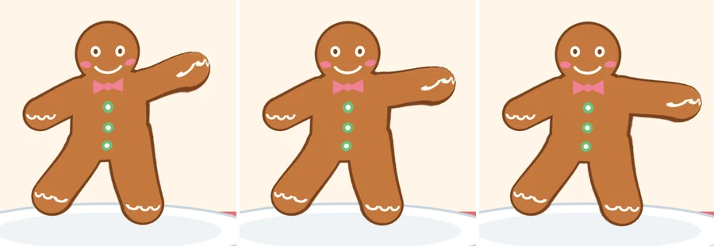
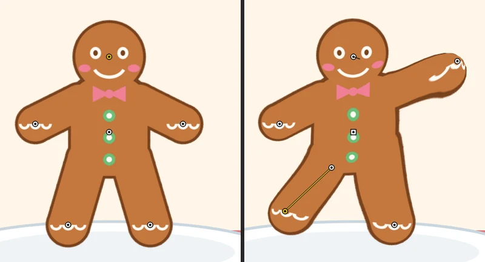

Tutorials
Warp a picture with pins
Pin a gingerbread cookie picture with the Asset Warp tool and bend it: wave an arm, tilt the head, freeze the tummy, keep a leg stiff with a bone, then tween the wave.
This page is also a lesson inside Phoenix: choose and start Warp a picture with pins, and Phoenix points at each control as you go. It takes about 9 minutes.
To follow along here instead, download the starting document, asset-warp.fla, and open it with .

The cookie on the Cookie layer is a picture, a PNG, not a drawing. The Asset Warp tool bends a picture, a shape or a graphic symbol around pins you stick in it, like a puppet.
1. Choose the Asset Warp tool
Press Shift+W, or choose the Asset Warp tool from the Bone tool's slot: press and hold the slot, then choose Asset Warp.
2. Make it a puppet
Click the cookie's tummy, on its middle button. Phoenix makes the picture a puppet, with a pin where you clicked. The picture goes into a graphic symbol, WarpedAsset_1, inside a puppet symbol, PuppetShape_1; both are in the library.
3. Pin the hands, feet and face
Click once on each hand, once on each foot and once on the face, between the eyes and the smile. Each click adds a pin, a small white circle. Then click Next.
Pins hold the picture where they are. When you move one, the picture bends between it and the others.
4. Wave
Drag the pin on the hand at the right of the picture up and out, above the shoulder. The arm bends up to follow while the other pins hold the rest of the cookie still.
5. Tilt the head
Hold Shift and drag from the face's pin out to the right and a little down. A Shift-drag turns a pin, and the picture round it, without moving it: the head tilts. A turned pin shows a tick the way it turned.
6. Freeze the tummy
Click the tummy's pin, then press F. The pin turns square: it is frozen, and the picture round it keeps its angle while the pins about it move, so the buttons stay upright.
7. A stiff leg
Click the cookie's left hip, at the left of the picture just below the bottom button, to add a pin there. Then hold Ctrl and click the pin on the left foot. A line joins the two pins: a bone. The picture along a bone stays on the line between its pins, like a stiff limb.
8. Kick
Drag the left foot's pin out to the left a little. The whole leg swings out straight along the bone instead of bending.

9. A second keyframe
Click frame 12 of the Cookie layer and choose . Each keyframe keeps its own pins.
10. Lower the hand
With the Asset Warp tool, click the tummy's pin to show the pins on this keyframe. Then drag the raised hand's pin down and out, level with the shoulder.
11. Tween the wave
Click frame 6 of the Cookie layer and choose . The tween bends the picture from one keyframe's pins to the other's.
12. Play it
Press Enter, or click the play button in the timeline header. The cookie waves.
What you did
You turned a picture into a puppet and bent it with pins: moved, turned, frozen and joined by a bone. Making the puppet and each pin change are single steps to undo.
To take a pin away, Alt-click it, or click it and press Delete. Ctrl-clicking a pin already joined to the chosen one takes the bone away again. Pins work the same on shapes, groups and graphic symbols.
For everything this tutorial touches on, see Asset Warp tool.